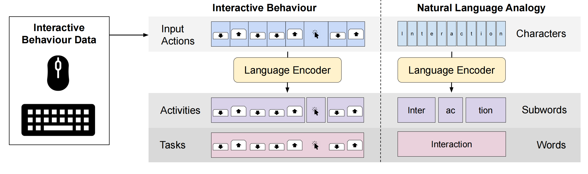

Exploring Natural Language Processing Methods for Interactive Behaviour Modelling
Guanhua Zhang, Matteo Bortoletto, Zhiming Hu, Lei Shi, Mihai Bâce, Andreas Bulling
Proceedings of the IFIP Conference on Human-Computer Interaction (INTERACT), 2023: 3-26.
Best Student Paper Nominees

Abstract
Analysing and modelling interactive behaviour is an important topic in human-computer interaction (HCI) and a key requirement for the development of intelligent interactive systems. Interactive behaviour has a sequential (actions happen one after another) and hierarchical (a sequence of actions forms an activity driven by interaction goals) structure, which may be similar to the structure of natural language. Designed based on such a structure, natural language processing (NLP) methods have achieved groundbreaking success in various downstream tasks. However, few works linked interactive behaviour with natural language. In this paper, we explore the similarity between interactive behaviour and natural language by applying an NLP method, byte pair encoding (BPE), to encode mouse and keyboard behaviour. We then analyse the vocabulary, i.e., the set of action sequences, learnt by BPE, as well as use the vocabulary to encode the input behaviour for interactive task recognition. An existing dataset collected in constrained lab settings and our novel out-of-the-lab dataset were used for evaluation. Results show that this natural language-inspired approach not only learns action sequences that reflect specific interaction goals, but also achieves higher F1 scores on task recognition than other methods. Our work reveals the similarity between interactive behaviour and natural language, and presents the potential of applying the new pack of methods that leverage insights from NLP to model interactive behaviour in HCI.Links
Paper: paper.pdf
BibTeX
@inproceedings{zhang23exploring,
title = {Exploring Natural Language Processing Methods for Interactive Behaviour Modelling},
author = {Zhang, Guanhua and Bortoletto, Matteo and Hu, Zhiming and Shi, Lei and B{\^a}ce, Mihai and Bulling, Andreas},
booktitle = {Proceedings of the IFIP Conference on Human-Computer Interaction},
pages = {3--26},
year = {2023},
publisher = {Springer}}